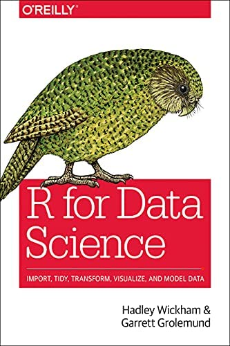

Randi Bolt
Blog
Blog
Categories
All
(6)
API
(1)
Data Visuals
(1)
Math
(2)
NBA
(1)
Proof
(1)
Quarto
(1)
R
(3)
Web-Scraping
(1)
tidycensus
(1)
Creating Functions in R to Scrape NBA Data
NBA
Web-Scraping
R
In this tutorial I will be creating functions to scrape NBA data. The goal here is to prepare these functions to use in a package for future analysis.
Oct 19, 2022
Randi Bolt
Prove P is Logically Equivalent to the Negation of the Negation of P
Math
Proof
Let P be a statement form. Prove that
\(P \equiv\neg (\neg P)\)
.
Oct 17, 2022
Randi Bolt
Latex
Math
Here is some short and simple latex.
Jan 6, 2022
Randi Bolt
API’s and tidycensus
R
tidycensus
API
This post explains how to use an API to access tidycensus.
Aug 27, 2021
Randi Bolt

R for Data Science - Ch.3: Data Visualisations
R
Data Visuals
These are examples and exercises from Chapter 3 of R for Data Science, by Hadley Wickham and Garret Grolemund.
Aug 27, 2021
Randi Bolt
Enable Emojis in Quarto
Quarto
This post explains two ways to insert emojis into a quarto blog.
1
Aug 26, 2021
Randi Bolt
No matching items